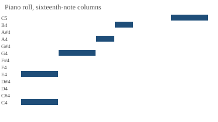
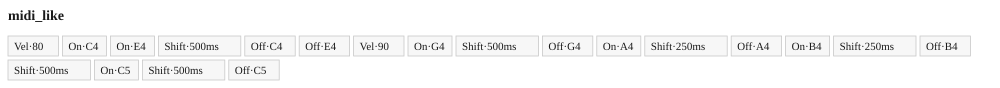
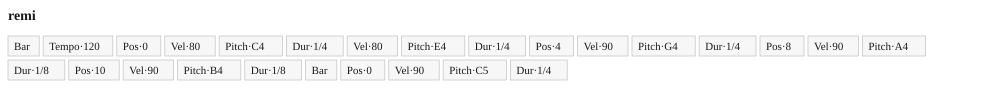
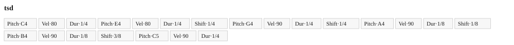
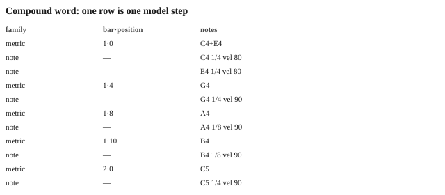
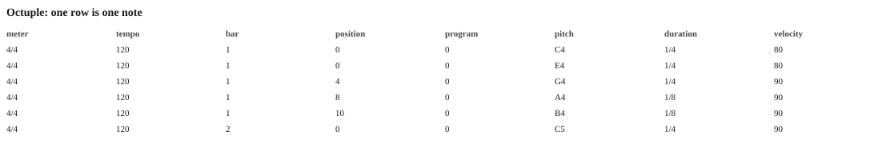
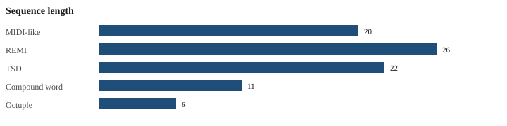

Class 1 of the survey: the same MIDI file written as MIDI-like, REMI, TSD, compound word, and Octuple. ABC is a lossy notation string, not an event vocabulary.







M:4/4 L:1/8 Q:1/4=120 K:C [CE]2 G2 AB z2 | c2 z6 |